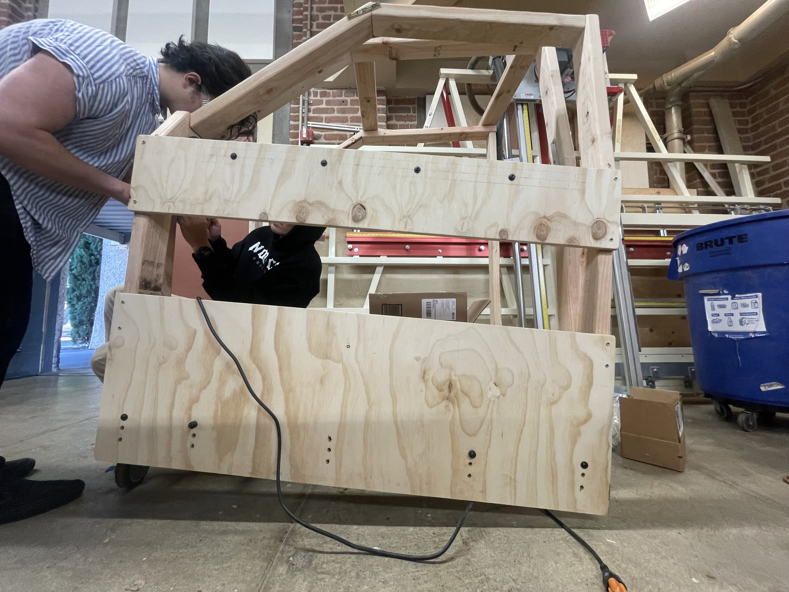

The
Slip
Door

By Victor Son, Sebastian Esteva, Seth Rhodes, Odommoly Tranin
It's hard, dangerous, and anxiety-inducing for mobility-impaired drivers to enter and exit parked cars.
Points found by needs-finding interviews with grandparents and local senior centers.
Four parts create an automatic system that circumvents traditional front-door challenges.


Automatic van-esc sliding front door increasing entrance volume by 250%*, so drivers can exit/enter easily.